A free guitar amp sim and multi-effects app for macOS and Windows.
Eight neural amps, a cab with mics you can move, a full pedalboard, and Match tone: load a song, play along, and it dials in the guitar. Open source, with zero added latency.
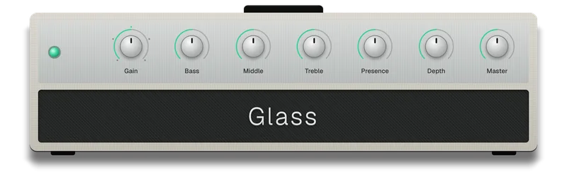
Glass
Clean to the edge of breakup.
Amp 1 on the shelf, program change 1 on a footswitch
Ember
Light crunch to heavy crunch.
Every amp's Gain blends five captures across the knob, so turning it up makes the amp distort harder, not just louder.
Amp 2, program change 2
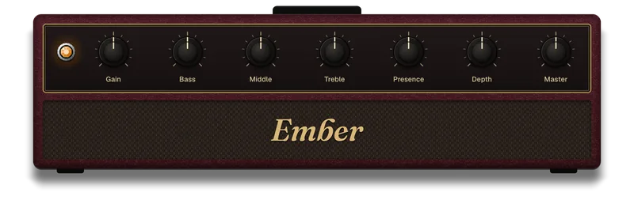
Monolith
Tight high gain to a saturated lead.
Each amp keeps its own knobs. Switch away and come back, and it's where you left it.
Amp 3, program change 3
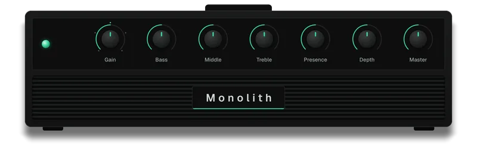
Match a tone from a song.
Load a song, pick the section where the guitar stands out, and BellyDSP finds the closest setting it has: an amp with its Gain and tone, a pedal and a compressor if they help, a cab, and a fine correction curve after it. A recording only holds the finished sound, so it finds the nearest match among its own amps and cabs; it doesn't recover the original gear.
-
The song
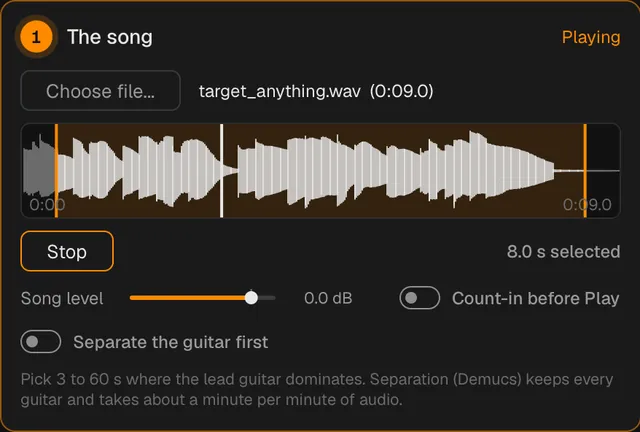
Choose a song file and drag over the part you want. With Separate the guitar first on, it pulls the guitar out of the mix.
-
Your DI
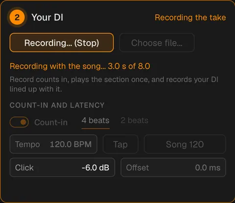
Press Record and play the part along with it after a count-in, or choose a DI file. Your take lines up with the song, so it compares your notes with the recording's, one by one.
-
The match
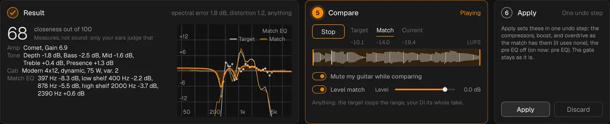
It shows what it chose and how close it got. Compare the song, the match, and your current sound, level-matched, then apply it in one undo step.
Lantern
Power-amp breakup, from the edge of breakup to crunch.
Voiced to answer your picking: dig in for crunch, and it cleans up when you pick softer.
Amp 4, program change 4
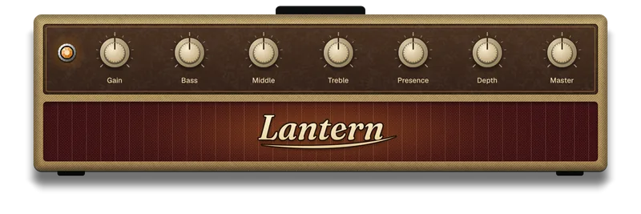
Basalt
Fat high gain with sag.
Made for palm mutes and big, open chords.
Amp 5, program change 5
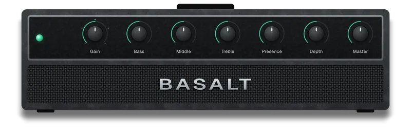
Everything around the amp.
The board under the stage is three tabs in signal order: Pre FX, Amp & Cab (the amp, Gate B and the cab), and Post FX. Every pedal has its own footswitch and LED, and every tab carries a row of LEDs, one per block in it, so a closed tab still shows what's on. Click a pedal to see all its controls, drag a Pre FX or Post FX pedal along its row to reorder it, and switch a whole section off at once. [ and ] step through the tabs, and selecting a block anywhere opens its tab.
Pre FX
- Gate A
- Compressor
- Boost
- Overdrive
- EQ
- to Amp & Cab
Amp & Cab
- from Pre FX
- Amp
- Gate B
- Cab
- to Post FX
Post FX
- EQ
- Compressor
- Harmonizer
- Multivoicer
- Bloom
- Chorus
- Delay
- Reverb
- Pre FX
- Gate A, a noise gate that listens to the clean guitar, with a Learn button. A compressor in a studio and a pedal style, boost and overdrive pedals modelled from their circuits, and a 9-band graphic or 5-band parametric EQ.
- Amp & Cab
- The eight built-in amps, picked from the shelf of minis on the stage, or your own amp-only
.namcapture as a ninth. The built-ins are NAM captures trained from BellyDSP's own amp models, not captures of real amps. - Gate B after the amp, which listens to the clean guitar too and can follow Gate A.
- The cab: two close mics and a stereo room mic, each an impulse response, with 21 public-domain IRs built in or your own. Load a cab pack and drag a close mic across the speaker to move it.
- Post FX
- EQ and compressor, a harmonizer that plays in key, a multivoicer, Bloom (bitcrusher, phaser and flanger in one), chorus, delay and reverb. Delay and reverb tails ring on when you switch them off.
- Around it
- Presets with eight scenes each along the bottom of the window, undo and redo, A/B compare, a tuner, tap tempo, and MIDI learn on any control. Settings holds the input level and the output, with a limiter so nothing clips.

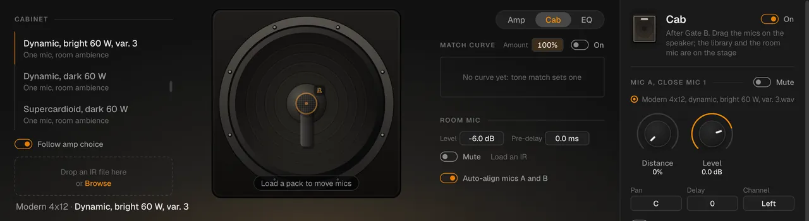
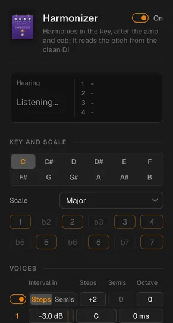
Comet
A saturated lead with the mids forward.
For sustained leads and wide bends.
Amp 6, program change 6
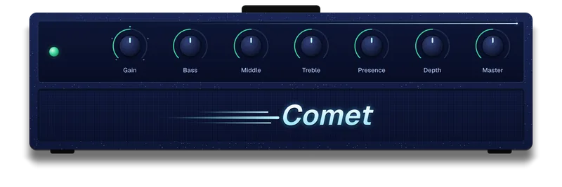
Forge
Tight modern high gain.
For fast, palm-muted riffing.
Amp 7, program change 7
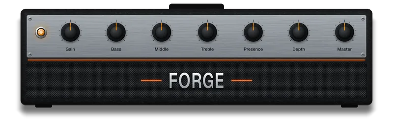
Quartz
A saturated lead, scooped and bright.
Only the amp you hear runs. Pick another and it fades in about a tenth of a second later, which keeps BellyDSP light on your computer.
Amp 8, program change 8
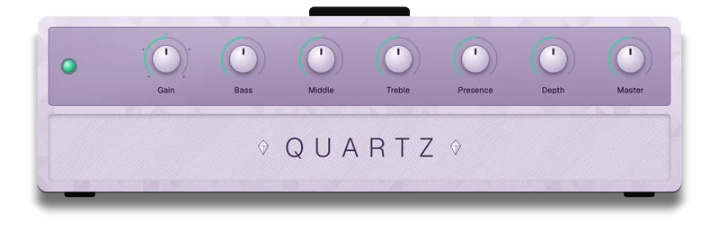
How it's built.
C++20 on JUCE, with NeuralAmpModelerCore, the official Neural Amp Modeler engine, running the amps. Sean Snaider designed and directed it, and built it with AI coding agents (Anthropic's Claude Code) under rules every change has to pass.
- Latency
- None added. The one exception is opt-in: the flanger's through-zero mode delays the signal by 5 ms while it's on, and says so.
- The audio thread
- It never allocates or frees memory, takes a lock, or touches the disk. A test plays 14 seconds through every feature and counts all three: 0, 0, 0.
- CPU
- The default rig uses about 6% of a 128-sample buffer on an Apple silicon Mac, and about 15% on GitHub's 4-core Windows test machine. A CPU saver switch helps older computers.
- Tests
- About 8,700 automated checks, including golden tests that hold the DSP blocks to Python references and the amps to NAM core's own renderer.
- Open source
- AGPL-3.0-or-later. Every download is built from a commit that's public and tagged first, so the exact source of every build is on GitHub. The licence.
Credits
BellyDSP stands on these open projects. Their licences ship with the app (BellyDSP > About / licenses).
- NeuralAmpModelerCore
- The official engine of NAM (Neural Amp Modeler), by Steven Atkinson. It runs every amp. MIT licence.
- JUCE
- The framework for audio, the app window, and the interface, used under the AGPLv3.
- Eigen
- The linear algebra library NAM runs on. MPL 2.0.
- demucs.cpp
- A C++ port of Demucs, by Sevag H., which separates the guitar from a song for Match tone. MIT licence. The model's weights download from the Demucs authors' repository the first time you use it.
- nlohmann/json
- Reads NAM's capture files. MIT licence.
- Sparkle and WinSparkle
- The updaters on macOS and Windows. MIT licence.
- Geist and Fraunces
- The typefaces in the app and on this site, served from here. SIL Open Font License.
- Jester Dyne Productions
- The built-in cab IRs, by Bastian Karschewski, released into the public domain (CC0). Thank you.
- Claude Code
- Sean designed and directed BellyDSP, decided how it should work and look, and plays it; Anthropic's Claude Code wrote much of the code, the tests, and this site under his direction.
Get BellyDSP.
Free for macOS and Windows. Install it once and it keeps itself up to date. You need an audio interface set to 48 kHz.
New in 0.2.0
- Eight amps, one at a time. Five new amps, each with its own head and its own knobs.
- A closer Match tone. Note-by-note comparison with your take, pedals and a compressor in the search, and a match curve after the cab.
- Lighter on slower computers. The amps run about twice as fast, and there's a CPU saver switch.